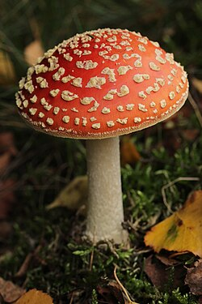
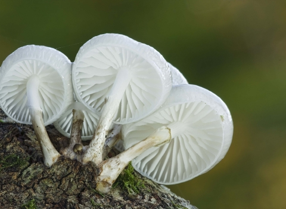
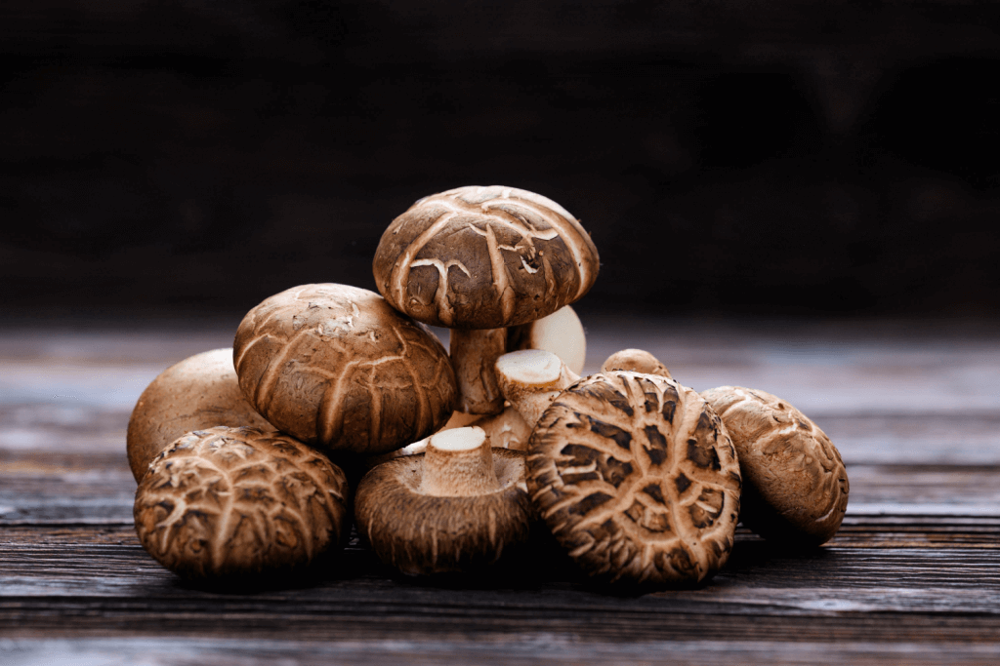
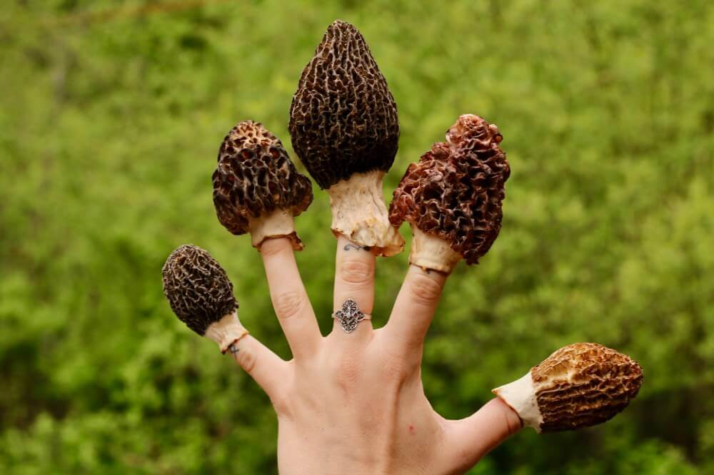

Exploring Fungi Design
Float Example

float: left;
Floats were one of the earliest ways to create web layouts before Flexbox and Grid.
Inline-Block Example
Box A
Box B
Box C
The inline-block property lets elements behave like text — they line up horizontally while keeping box properties such as padding and borders.
Floating Image Gallery


